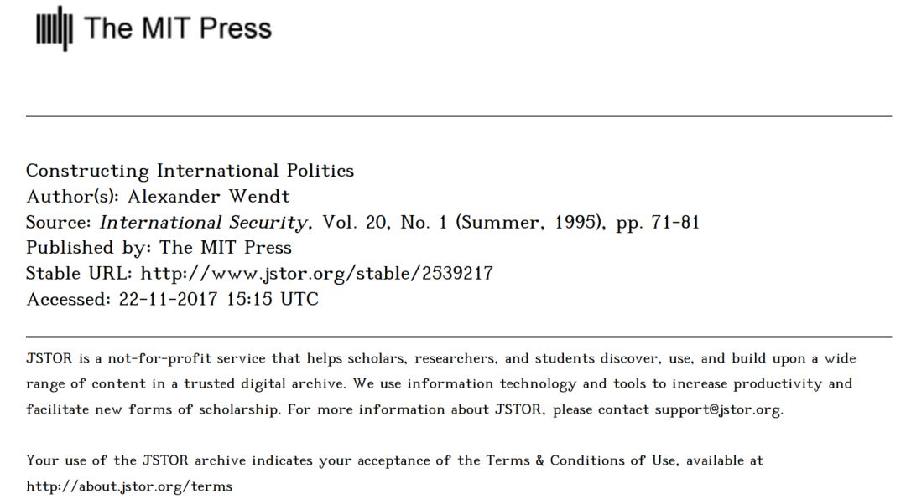

收录于合集

简 介
亚历山大·温特（Alexander Wendt） ** [1] ，**美国芝加哥大学政治学教授，建构主义国际政治理论的重要学者。1989年在明尼苏达大学获得政治学博士学位，后曾在耶鲁大学（1989-1997年）和达特茅斯学院（1997-1999年）任教，1999年加盟芝加哥大学政治学系。1992年发表论文《无政府状态是国家造就的：权力政治的社会建构》，奠定了他在建构主义理论研究领域的学术地位。1999年出版著作《国际政治的社会理论》，系统阐述了国际政治的建构主义理论。
编译：梅方昊， 来自暨南大学国际关系学院，国政学人编译部特约编译员。
声明： 目前国内尚未有此文的中文翻译版本，此文由国政学人编译全网首发。
约翰·米尔斯海默（John J. Mearsheimer）的《国际制度的错误承诺》在两个方面尤其受欢迎。首先，这是由新现实主义者对国际关系批判理论做出的最系统化的回应尝试；其次，它提醒往往囿于彼此间竞争的新自由主义者与批判理论家，他们对国际生活的制度基础有共同的、非现实主义的（non- realist）兴趣。因此，“错误的承诺”可能引起各方富有成效的讨论。
不幸的是，对大多数批判理论家来说，很难严肃对待关于他们那充满了融合（conflations）、半真半假的陈述（half- truths）以及误解的研究纲领的讨论。然而，在某种程度上，当出身于一种文化的人类学家去探索另一种文化时，误解是不可避免的。两种文化间的对话早就该发生了，“错误的承诺”是一个好的开始。
然而，批判性国际关系“理论”不是一种单一理论。它是一个由后现代主义（阿什利、沃克）、建构主义（阿德勒、克拉托赫维尔、鲁杰还有现在的卡赞斯坦）新马克思主义（考克斯、吉尔）、女性主义（彼得森、西尔维斯特）和其他理论构成的理论群。使它们凝聚起来的是对世界政治是如何被“社会建构”的关切，这涉及两个基本论点：国际政治的基础结构是社会性的而非严格地物质性的（一种与物质主义相对的论点）；这些结构塑造了行为体的身份与利益，而不仅仅是它们的行为（一种与理性主义相对的论点）。然而，拥有这两个共同的论点在帮助批判理论成为一种单一理论方面，仍比不上新现实主义与新自由主义都使用博弈论帮助它们成为单一理论所起的作用。一些批判理论家是统计学家，有些不是；有些相信科学，有些不相信；有些乐观，有些悲观；有些批判理论家强调过程，有些强调结构。因此，在我的回应中，我仅作为一个“建构主义者”为自己发声，希望其他批判理论家能赞同我的大部分观点。我提出四个议题：假定（assumptions）、客观知识（objective knowledge）、解释战争与和平和政策制定者的责任。
假定
我共享了米尔斯海默的“现实主义”假定，即国际政治处于无政府状态和国家具有进攻能力，不能百分之百确定其他行为体的意图；国家渴望生存，以及国家是理性的。我们甚至共享了更多的两点：承认国家作为分析单位与体系或“第三意象”理论的重要性。
最后值得强调的是，将“结构”与“话语”（discourse）并列且强调批判理论中的个体角色，米尔斯海默掩盖了建构主义者是结构主义者的事实。事实上，我们反对新现实主义的主要原因之一就是新现实主义不够结构化：其采用了微观经济学的个体主义象征来限制结构对国家行为的影响，忽视了结构可能以何种方式建构国家身份与利益。建构主义者认为，国家利益是体系结构建构的重要部分，而非外生于体系结构。这导致了社会学的（sociological）而不是微观经济学的结构主义。
然而，新现实主义与建构结构主义真正的不同在于他们关于结构由什么构成的假定。新现实主义者认为，它仅由物质能力的分配构成，而建构主义者认为它也由社会关系构成。社会结构有三个要素：共有知识（shared knowledge）、物质资源和实践。
首先，社会结构部分地被共有理解、预期（expectation）或知识所定义。这些构成了处于特定位置的行为体及它们之间的关系，无论这种关系是合作性的还是冲突性的。例如， 安全困境（ security dilemma ） 是一种由主体间理解所构成的社会结构，在这种主体间理解中，国家是如此地互不信任，以至于它们对彼此的意图做了最坏的假定。因此，它们从自助的角度定义它们的利益。安全共同体则是一种不同的社会结构，其由国家彼此信任，用非战争手段解决争端的共有知识构成。这种社会结构对观念（ideas）的依赖是一种感觉，在这种感觉里，建构主义对结构有一种理想主义（或“理念主义”）的看法。然而，使这些观念（也即结构）“社会化”的是它们的主体间质量。换言之，社会性（与物质性相对，从基本的物质能力的意义上说）是关于共有知识（的概念）。
其次，社会结构包括如金子、坦克这样的物质资源。与新现实主义者对这些能力的非社会化（desocialized）的看法相对，建构主义者主张，物质资源只有通过经由共有知识的结构（而展现）的人类行为才能获得意义，而物质资源本身就嵌于这种结构之中。例如，500件英国的核武器对美国的威胁尚不及5件朝鲜的核武器，因为英国人是美国人的朋友而朝鲜不是，并且友善或敌意是共有理解的一项功能。作为世界政治的研究者，新现实主义者可能会同意，但作为理论家，这样的例子彰显了一个大问题，因为这完全避开了他们对结构的物质主义定义。物质能力本身解释不了任何事情，它们的效果以共有知识的结构为前提条件，结构是变化的，且不可化约为能力。建构主义因此与物质力量影响社会关系的变化相容，只要他们能被揭示以更深层次的社会关系为前提。
再次，社会结构既不存在于行为体的脑海中，也不存在于物质能力中，而是存在于实践中。社会结构只存在于过程。冷战是统治了大国关系近四十年的共有知识结构，但一旦他们停止在这个基础上行事，冷战就“结束了”。
总而言之，社会结构是真实的和客观的，不是“说说而已”。但这种客观性有赖于共有知识，进而，在这种意义上，社会生活“自上而下都是观念”（ideas all the way down），（除非说到生物学和自然资源）。因此，如果问“作为权力与利益的反面，观念什么时候重要呢？”就是问了错误的问题。观念总是重要，因为权力与利益与构成它们本身的共有知识剥离开就没有影响力了。如米尔斯海默注意到的，真正的问题是，为什么是这一种社会结构存在，像自助（在这种结构下，权力与自我利益决定行为）而不是另一种，像集体安全（在这种结构下，它们不决定行为）。
与此问题规范的特征相反的解释值得强调。建构主义者对推进社会变革有着标准的兴趣，但他们通过尝试解释看起来自然的社会结构，像自助或冷战，如何成为实践的效果，来追求社会变革（这是批判理论的“批判”方面）。这令我怀疑米氏重复提及（我数过了有十四处）的批判理论家在地球上使和平与爱流行开来的“目标”（goals）、“目的”（aims）和“愿望”（hopes）。即使我们都有这样的愿望（我表示怀疑），且它们在伦理上是错的（虽然米氏似乎支持它们），它们也游离于评价世界政治的批判理论的要点之外。如果批判理论失效了，这将是因为它们没有解释世界是如何运行的，并不是因为它们的价值观。强调后者让人回想起古典现实主义将论敌描绘成关注应然世界多于实然世界的乌托邦主义者的策略。批判理论家有规范性的承诺，就像新现实主义者那样，但我们也仅仅试图解释这个世界。
客观性
米尔斯海默暗示批判理论家不相信存在我们可以拥有关于它的知识的客观世界。这并不是问题所在。这里有两个问题，本体论和认识论。
有关本体论的问题是，如我上文提到的，社会结构是否客观存在。社会结构是集体现象，作为外生存在的社会事实与个体相对。冷战对于我和米尔斯海默同样真实。
有关认识论的问题是，我们是否可以拥有关于这些结构的客观知识。这里米尔斯海默忽略了现代和后现代批判理论的关键区别。后者事实上怀疑客观知识的可能性，虽然在他们经验性的成果中，甚至他们都致力于证据与例证。然而，建构主义者是完全支持针对证据的证伪理论科学项目的现代主义者。在米尔斯海默引用的一篇文章中，我倡导一种社会调查的科学- 现实主义方法，其采取一种非常亲科学的（pro-science）态度。不管他的断言，现在建构主义经验性的研究成果有了嵌着完整传统认识论的坚实主体。
然而，米尔斯海默是正确的，批判理论家认为我们不能在主体与客体之间作清晰的区分。于是，再一次，今天几乎所有的科学哲学家拒绝这样一种天真的认识论。从我们所见都被我们现存的理论所调和以及目前掌握的知识（extent knowledge）固有地存在问题这个意义上看，所有观察都被理论渗透（theory- laden）。但这并不意味着观察，更不必说现实，是被理论决定的（theory- determined）。世界依然在那约束我们的信仰，并可能因那些不正确的信仰而惩罚我们。蒙特祖玛地区曾经流传一种理论，认为西班牙人是上帝，但这是错的，带来了灾难性的后果。我们并没有直接（unmediated）与世界相接的入口，但这并不妨碍我们理解它是如何运作的。
解释战争与和平
米尔斯海默将现实主义理论与批判理论之间的争论限定为战争理论与和平理论之间的争论。这是一个基础性的错误。社会建构的讨论与博弈论的讨论相近：在冲突与合作之间保持分析性中立。批判理论并不预测和平。与和平反驳现实主义相比，战争对批判理论的反驳并不更有力。迷惑是出于混淆了描述（description）与解释（explanation）。
描述性议题是国家陷入 现实政治 （realpolitik）（战争、制衡、追求相对收益）实践的程度与接受法律与制度的规则对其自主性的限制程度的对比。国家有时确实陷入权力政治，但这难以描述过去1300年的所有历史，且更加难以描述现在，大多数国家在大多数情况下遵守大多数国际法的时代，也是战争与安全困境是例外而非原则的时代，在这个时代，大国不再倾向于侵略小国，自由贸易在扩大而非缩小。然而， 现实政治 的相对频率与“现实主义”无关。现实主义应该被视为对 现实政治 的一种解释，而非对其的描述。混淆这两者便不可能分辨一方对另一方解释得如何，进而导致同义反复，即战争使现实主义是真实的。现实主义并未垄断国际生活中丑陋与残酷的一面。即使我们同意 现实政治 的描述，我们也可以拒绝现实主义的解释。
解释性议题是为何国家卷入战争与和平。米氏对建构主义在这一问题上的“因果逻辑”的描述约有30%是正确的。此逻辑有两个要素，结构与施动者（agency）。一方面，建构主义的推理试图揭示一个体系的社会结构如何通过用确定的身份与利益建构行为体，用确定的意义建构物质能力，使（行为体的）各种行为成为可能。米氏的记述遗漏了建构主义对施动与互动如何产生及不断重复产生共有知识的结构的强调。因为在此不可能讨论使这个过程发生的各种不同动力，我将举例说明。而且因为米尔斯海默没有提供一个关于国家间合作的新现实主义解释，同时承认这是新自由制度主义者的领域，我将聚焦于为何国家有时陷入安全困境及战争，也即，为何国家有时卷入 现实政治 行为。
在《无政府是国家造就的》一文中，我主张这种行为是一种自我实现的预言，且这是由于施动者与结构两方面的原因。因此，在施动者方面，国家对彼此的所作所为通过互惠的逻辑影响它们所在的社会结构。如果他们军事化，其他国家将会被威胁并武装自己，创造安全困境，并根据安全困境的来定义自我身份与利益。但如果他们采取示善政策（policies of reassurance），像苏联在80年代晚期所做的那样，这会对共有知识的结构产生不同的效果，推动它向安全共同体前进。在这方面，相互依存的深度是一个因素，修正主义国家的作用也是一个因素，其行为很可能特别具有威胁性。然而，在结构方面，修正主义国家发动一场所有人反对所有人的战争的能力有赖于它们参与的共有知识的结构。如果过去的互动已经创造了一个结构，其中现状国是分裂的或天真的，修正主义国家将会盛行且体系将趋向于霍布斯世界，在这个世界中，权力与自利居于统治地位。反之，如果过去的互动已经创造了一个现状国信任与认同彼此的结构，侵略者更可能面临像海湾战争那样的几集体安全回应。 历史很重要 。安全困境并不是上帝的行为：它们是实践的结果。这并不意味着安全困境一旦被创造，国家必然能从中逃脱（毕竟，它们是“困境”），但这将因果轨迹置于正确的位置。
将这种对权力政治的解释与“新现实主义的贫困”相比较。米尔斯海默认为，在无政府状态下，国家不能百分之百确定其他国家不会进攻自己，这非常重要。然而，即便在国内社会，我也不能确定我在上学路上会很安全。生活中没有保证，无论是在国内还是国际，但“无政府状态下战争是可能的”并不意味着“它在任何时候都可能发生”，事实上，正如在当今大多数互动中，战争可能难以发生。可能性（possibility）不是概率性（probability）。这样的无政府状态不是任何事情的结构性原因。重要的是其社会结构，社会结构会在无政府状态下发生变化。朋友的无政府状态不同于敌人的无政府状态，自助的无政府状态也不同于集体安全的无政府状态，这些都被共有知识的结构所建构。米尔斯海默并没有提供一个主张，说明为什么这是错误的，他只是简单断言这是错的。
其他关于权力政治的现实主义解释则稍好一些。虽然新现实主义者希望回避从人类本性中得出的结论，即便他们会认可，群体中的人类在一定程度上易于恐惧和竞争，这可能将他们推向战争。然而，此因素面临着相互依存与集体身份表述的补充动力，有时这些补充动力盖过了其本身。物质能力的分配也很重要，尤其是如果进攻占主导地位，并且军事建设理所当然会引起他国关注的情况下。然而，再次强调，权力的意义有赖于共有知识的潜在结构。英国的能力建设（build- up）对美国的威胁弱于朝鲜的能力建设，而且与处于安全困境中相比，安全共同体中发生能力建设的可能性要低。
为了从无政府状态及物质力量到权力政治及战争，新现实主义者被迫做出关于国际体系的社会结构的额外的、特设的假定。我们从米尔斯海默对“极端民族主义”（hyper- nationalism）的兴趣、斯蒂芬·沃尔特（Stephen Walt）对“威胁平衡”（balance of threat）中意识形态的强调、兰德尔·施韦勒（Randall Schweller）对现状- 修正区别的关注以及，如我在《无政府》一文中主张的，华尔兹的无政府状态是自助体系的假定中看出这一点。纳入这些假定产生了更多的解释力，但是如何做到的？在这些案例中，是由社会性，而非物质性因素起到了关键的因果作用。这是一个建构主义者，而非新现实主义者对结构看法的核心。
当新现实主义者试图解释当今世界国家间战争的相对缺位时，问题变得更加尖锐了。如果无政府状态是如此具有决定性的话，为什么没有更多的波斯尼亚人呢？为什么弱国没有被全部消灭呢？认为挪威与瑞典、美国与加拿大、尼日利亚与贝宁之间的和平都是由于物质均衡造成的是难以置信的。米尔斯海默说，当核心利益不受威胁时，合作是可能的，同时说道“一些国家因历史和意识形态的原因而尤其友好”。但是这完全回避了为什么在表面上“现实”的世界中，国家没有发现自己的利益持续地被其他国家所威胁的问题。同样也回避了它们如何成为朋友的问题。也许，米尔斯海默会说，今天的大多数国家的现状国和主权国家。但是这再次回避了问题。如果没有相互承认及不干涉制度，什么是主权呢？如果没有国家利益中对于现状相联系的、这一制度的内化，现状是什么？大卫·斯特朗（David Strang）认为，被承认为主权国家的国家与那些不被承认的国家相比，有更好的生存前景。与挑战这一主张相去甚远，米尔斯海默预先假定了这一点。
新现实主义者逐渐依赖社会因素来做解释性工作表明，如果国际关系理论有退化的研究纲领候选的话，新现实主义就是其一。进步的回应(在拉卡托斯的意义上)将回到现实主义的物质主义根源，表明赋予能力意义的背景理解是由更深层次的物质条件造成的，或者能力具有不可忽视的内在意义。换言之，通过揭示物质基础决定国际上层建筑，现实主义者应该清除掉他们理论中的社会性内容，而不是像他们相识所做的那样，将之加入其中。反过来，反现实主义者应该试图揭示，物质方面的因果力如何预先假定社会性内容，而非试图揭示制度解释了超越权力与利益的分配所能解释的额外分歧，仿佛后者是一个有特权的、先于社会性的基线。
责任
《国际制度的错误承诺》的一个重要优点，是它将新现实主义者及其对手与外国政策制定者的伦理责任联系起来。这种责任部分取决于改变无政府状态下的共有知识的结构在多大程度上可能。如果这种改变是不可能的，那么米尔斯海默是对的，掌管国家安全的人谋求改变共有知识的结构是不负责任的。另一方面，如果改变是可能的，那么，追求一直破坏旧有秩序的政策是不负责任的，特别是当我们在乎后代的康乐时。
宣称结构被社会性地建构并不保证结构可以被改变。有时社会结构是如此的限制行为，以至于转型策略是不可能的。这回到了社会结构的集体本质，结构性改变取决于改变可能相互强化的期望的体系。因此，确定政策制定者责任的关键议题是，社会结构的限制有多“松弛”。新现实主义者认为，体系中几乎不松弛，因此，偏离权力政治的国家会通过无政府的“逻辑”受到惩罚或者被消灭。制度主义者认为，这样的危险已经被制度大大降低了，比如主权制度和民主和平，因此，和平变革有更大的可能性。
在这方面，戈尔巴乔夫的例子是有教益的，因为冷战是一个高度冲突的社会结构。我同意米尔斯海默所说的，苏联的核力量令戈尔巴乔夫可以为他的政策留下安全的余地。然而，其他处在他位置上的人也许早就选择了一种更富有侵略性的解决方案以应对权力的衰落。关于戈尔巴乔夫政府特别重要的是，它有勇气审视苏联自己的实践是如何维持冷战的，并承担对西方意图的重新评估。这就是一个建构主义者，而非新现实主义者会做的事，新现实主义者会以天真和仅仅是上层建筑为由回避对这些社会性因素的关注。事实上，关于新现实主义，十分具有震撼性的是他们对于国家实践的解释性角色的完全忽视。国家做什么似乎并不重要：勃列日涅夫、戈尔巴乔夫、日里诺夫斯基，有什么不同呢？无政府状态的逻辑总是把我们带回原点。这是一个令人不安的态度，如果现实政治导致了其作为对现实政治的一种回应的话。因此，就现实主义对现实政治的建议而言，这是问题的一部分。米尔斯海默说批判理论因为这个原因对现实主义“不宽容”。姑且不论这个建议的讽刺之处，重要的是使政策制定者接受解决冲突的责任，而不是简单管理或利用它们。如果新现实主义能够推动我们朝那个方向前进，那么它应该是这样的，但在我看来，新现实主义伦理学可以归结为“人人为己”。
分析国际政治的社会建构是分析互动的过程如何产生并再生社会结构——合作性的或冲突性的——社会结构塑造行为体的身份与利益以及它们物质性内容的重要性。它反对两个对手：物质主义的观点，认为物质力量 从本质上 决定国际生活，新现实主义是其中的一种表述；以及理性选择理论的观点，即互动不改变身份与利益。米尔斯海默的文章是对这些假说进行比较评估的一个重要开端。但是，只要新现实主义者认为建构主义者是颠覆性的、不相信现实世界，并且期望我们这个时代的和平的乌托邦主义者，他们就不会对这场争论做出任何进一步的贡献。
[1] 本文翻译自Alexander Wendt, “Constructing International Politics,” International Security , Vol. 20, No. 1 (Summer, 1995), pp. 71-81
- 点击左下角 阅读原文 可获取原文pdf版
**
**

更多阅读

国政学人 （ID：guozhengxueren)
为方便学人及时阅读高质量文章
别忘把国政学人设置 星标 哦~